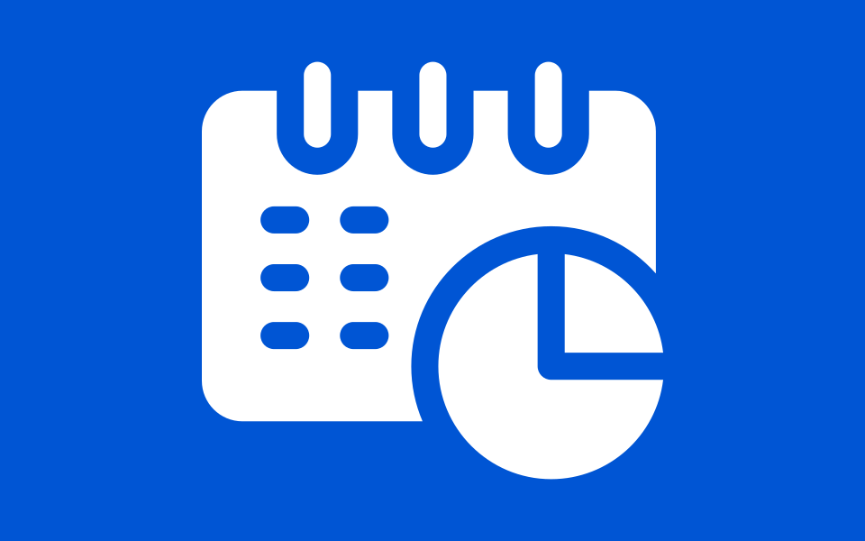
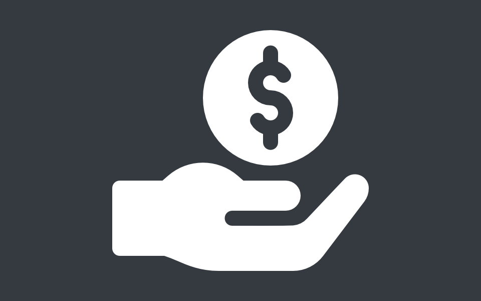
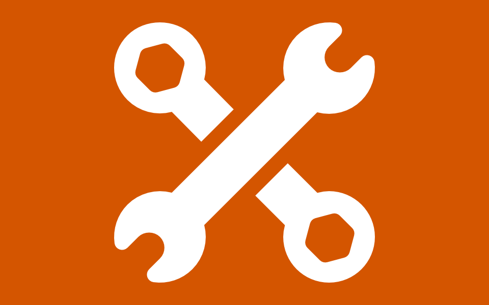

Your contributions help us forward our mission and allow our community learn, share, and grow. Below are some ways you can activelycontribute to North End Makers, followed by some great options for passively supporting us too. Don't forget! Many employers match funds with employee volunteer hours or personal donations. This can be a wonderful way to stretch your time or financial contributions.

We are always looking for volunteers to help run events, teach classes, help out at the space, or join a committee. Volunteering for a nonprofit is engaging and rewarding. For some it offers the chance to give back to their community or support something important to them. For others it provides an opportunity to develop new skills or build on existing experience and knowledge. What will volunteering do for you?

We offer the ability to make one-time or recurring donations secured through the Paypal Giving Fund. Donating to a 501c3 nonprofit such as ours may give you a tax deduction. All one-time donations of $250 or more will be emailed a receipt for your tax records. If you would like a receipt for any other donations, please email our treasurer.

Your donated and loaned tools are a welcome gift. Our equipment lend and donate process is very simple and we can even come pick up the equipment from you for even more convenience. Contact us today to find out how you can improve the lives of local makers with your kind donation or loan of your unused equipment.
We are listed on all major charity listings and can be contributed to passively through shopping or social media fundraising on the following sites. Click an image to learn more.
You can find information about us and our mission as well as contact information on our about page. You can also check out our various social channels using one of the links below.